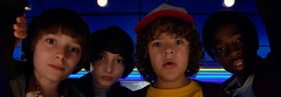

El cineasta Charlie Kessler presentó una demanda en contra de Matt y Ross Duffer, los creadores de la popular serie Stranger Things, por presuntamente robar su idea para el programa de Netflix. Kessler explicó que grabó una película titulada Montauk, la cual trataba sobre experimentos realizados por el Gobierno. El filme debutó en el año 2012 y fue premiado en el festival de cine Hamptons International Film Festival.
El director de cine argumenta que en 2012, en una fiesta del Tribeca Film Festival, él le presentó a Matt y a Ross la idea para una serie de televisión titulada The Montauk Project.
De acuerdo con la demanda presentada por Kessler, los hermanos rechazaron su propuesta, pero luego vendieron el proyecto a Netflix, apropiándose de su idea, de su guión, de su temática y del título para Stranger Things.
Stranger Things originalmente estaba situada en Montauk, Long Island, pero luego cambió su ubicación a Indiana (el rodaje de la serie es en Georgia).

La trama de Montauk es muy similar a la de Stranger Things: un niño desaparece misteriosamente, un policía con un pasado difícil promete encontrarlo, una conspiración misteriosa en una base militar está realizando experimentos con niños, y hay un monstruo creado por un portal a otra dimensión que se asemeja a un juguete de niños.
Pero hay un elemento que puede jugar a favor de los hermanos Duffer; la película de Kessler está basada en una conspiración de la vida real que involucra experimentos paranormales secretos del Gobierno en la base de Montauk en 1970. La exitosa serie de Netflix también estaría basada en estos mismos hechos.
Kessler establece en la demanda que busca compensación monetaria por los daños y un juicio ante jurado.
El abogado de los hermanos Duffer dijo hoy que la demanda en su contra por el supuesto hurto de la idea para crear la serie no tiene fundamento e intenta beneficiarse del éxito de la marca.
"La demanda del señor Kessler no tiene ningún fundamento", indicó Alex Kohner, abogado de los Duffer, en un comunicado. "No tuvo ninguna conexión con la creación o el desarrollo de la serie. Los hermanos Duffer no han visto el corto del señor Kessler ni han hablado de ningún proyecto con él", agregó.
Kohner indicó que la intención de Kessler es beneficiarse "de la creatividad y el trabajo duro" de otras personas.